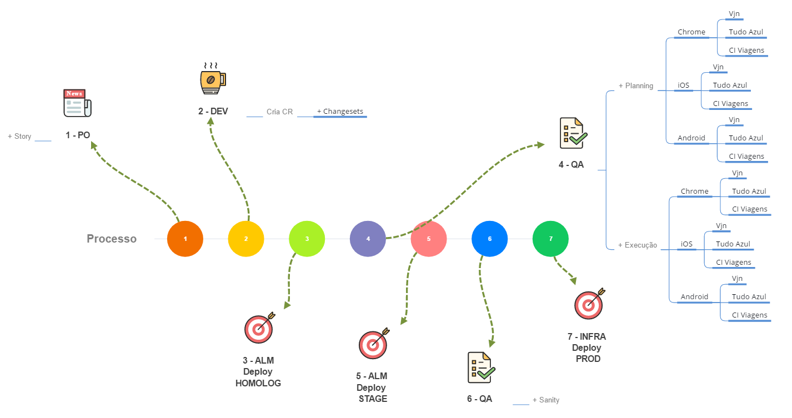

Testes Automatizados
Por quê automatizar?
Todo desenvolvimento precisa de um conjunto de testes e toda entrega tem seus defeitos. O objetivo do QA é encontrar esses defeitos antes da entrega mas sempre acaba passando alguma validação, por melhor que seja o teste manual. O teste automatizado é a melhor forma de aumentar a eficiência e cobertura dos testes.
Vantagens
Alta cobertura
É possível rodar o mesmo teste em diferentes máquinas com diferentes configurações
+ Tempo
A execução do teste manual repetidamente custa tempo e dinheiro. Já o teste automatizado, uma vez criado, pode rodar várias vezes sem custo adicional e muito mais rápido que um teste manual.
+ Precisão
No meio de vários testes monótonos, até o melhor dos testers pode cometer erros. O teste automatizado realiza sempre os mesmos passos precisamente.
Testers + Felizes :D
Os testers se livram de um trabalho repetitivo e ganham tempo para criar novos testes automatizados ou validar features mais complexas.
Como funciona hoje?

Como ficaria?
A Estrutura
Estamos utilizando algumas ferramentas que auxiliam na criação e execução dos testes, são elas:
- SpecFlow (BDD)
- Selenium
- Appium
- C#
O que é o BDD?
O BDD é uma técnica de desenvolvimento de software, onde os programadores desenvolvem o software direcionados por comportamentos. Tais comportamentos são definidos utilizando a linguagem do negócio e ajudam o programador a entender melhor a funcionalidade que será desenvolvida.
A técnica de BDD confia no uso de um vocabulário bem específico e pequeno, com o objetivo de minimizar a falta de comunicação e garantir que TODOS (stakeholders, desenvolvedores, testadores, analistas e gerentes), não estão apenas na mesma página, mas também estão usando as mesmas palavras. BDD pode ser considerada uma Ubiquitous Language (“Linguagem Onipresente”).
BDD na prática

Estrutura do código
Appium
O appium é uma ferramenta de automação de aplicações mobile. Com ele, é possível utilizar o mesmo teste criado para rodar a aplicação desktop no ambiente mobile (android)

Integração VS